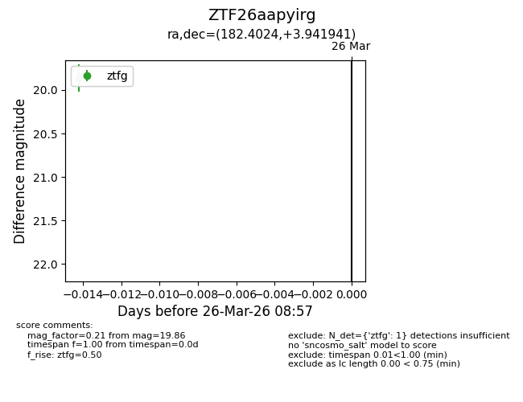
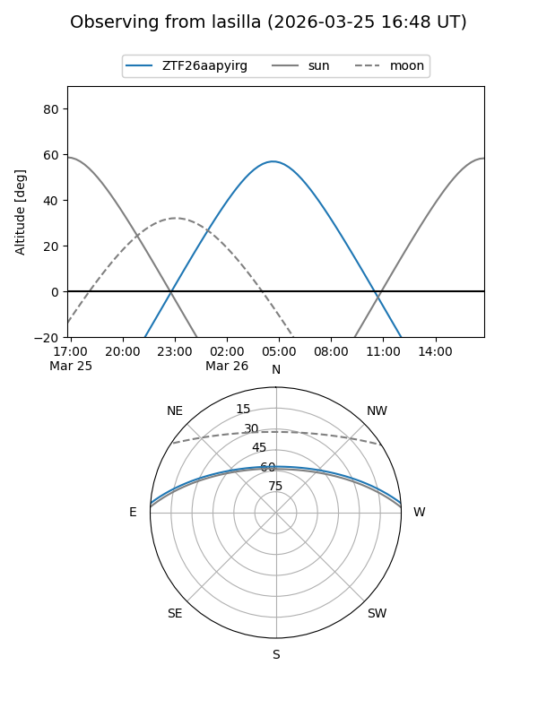
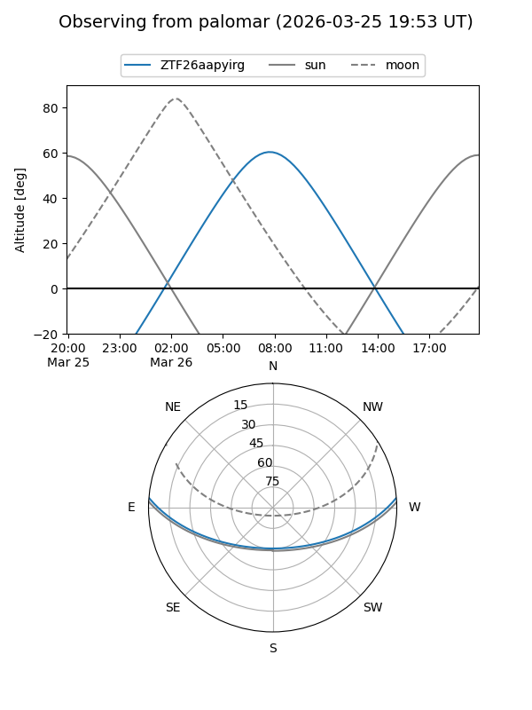

ZTF26aapyirg
Target ZTF26aapyirg at 2026-03-26 08:59
Aliases and brokers:
FINK: link
Lasair: link
ALeRCE: link
alt names
ZTF26aapyirg (ztf,fink_ztf)
Coordinates:
equatorial (ra, dec) = 182.4024,+3.94194
equatorial (HMS+DMS) = 12:09:36.59,+03:56:30.99
galactic (l, b) = (277.8106,+64.75372)
Flags:
Photometry:
last ztfg=19.86
1 ztfg detections
Lightcurve

Visibility


Additional plots